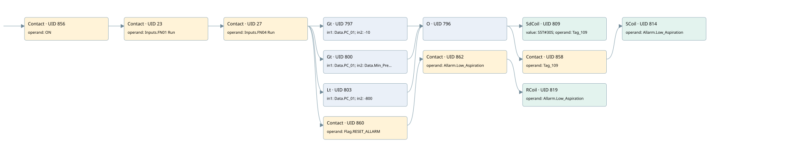

pc-01 low depressure
allarms 3 · 검색 색인 순서 9 · 원본 내부 NID 추정 9
백업 PLF 원본의 3174355 바이트 위치에서 복원한 XML. 검색 문서 1987의 객체 키 16102200796b000000000000와 연결했다. 이름 해석 16/16개. 남은 RefId는 상수 또는 미해석 참조다.
연결 구조 다시 그리기
원본 Part/PCon/Wire를 이용한 연결도다. TIA 화면의 래더 배치 또는 실행 결과를 재현한 그림은 아니다. 핀 연결은 아래 표와 원본 XML을 기준으로 읽는다. 노드 위에 마우스를 두면 피연산자 이름을 볼 수 있다.

접점·코일·블록과 피연산자
| Part UID | Gate | Negated 핀 | 연결 피연산자 |
|---|---|---|---|
| 856 | Contact | operand = ON | |
| 23 | Contact | operand = Inputs.FN01 Run | |
| 27 | Contact | operand = Inputs.FN04 Run | |
| 797 | Gt | in1 = Data.PC_01; in2 = -10 | |
| 800 | Gt | in1 = Data.PC_01; in2 = Data.Min_Pressure_PC_01 | |
| 803 | Lt | in1 = Data.PC_01; in2 = -800 | |
| 796 | O | ||
| 809 | SdCoil | value = S5T#30S; operand = Tag_109 | |
| 858 | Contact | operand = Tag_109 | |
| 814 | SCoil | operand = Allarm.Low_Aspiration | |
| 860 | Contact | operand = Flag.RESET_ALLARM | |
| 862 | Contact | operand = Allarm.Low_Aspiration | |
| 819 | RCoil | operand = Allarm.Low_Aspiration |
접점 경로를 펼친 조건식
Contact·O/A·비교기의 원본 연결을 읽기 쉽게 펼친 보조 해석이다. POWER는 전원 레일 시작을 뜻한다. 호출 블록·에지·타이머의 내부 동작과 다중 쓰기 순서는 이 표로 실행 검증하지 않았다. 미해석 핀과 RefId는 원문 연결표에서 확인한다.
| UID | 동작 | 대상 | 원본 접점 경로 | 내용 |
|---|---|---|---|---|
| 809 | SdCoil | Tag_109 | ((((ON AND Inputs.FN01 Run) AND Inputs.FN04 Run) AND [Data.PC_01 > -10]) OR (((ON AND Inputs.FN01 Run) AND Inputs.FN04 Run) AND [Data.PC_01 > Data.Min_Pressure_PC_01]) OR (((ON AND Inputs.FN01 Run) AND Inputs.FN04 Run) AND [Data.PC_01 < -800])) | 시간 동작 SdCoil; 타이머 의미 추가 확인 / 시간 인자 S5T#30S |
| 814 | SCoil | Allarm.Low_Aspiration | (((((ON AND Inputs.FN01 Run) AND Inputs.FN04 Run) AND [Data.PC_01 > -10]) OR (((ON AND Inputs.FN01 Run) AND Inputs.FN04 Run) AND [Data.PC_01 > Data.Min_Pressure_PC_01]) OR (((ON AND Inputs.FN01 Run) AND Inputs.FN04 Run) AND [Data.PC_01 < -800])) AND Tag_109) | 조건 성립 시 Set |
| 819 | RCoil | Allarm.Low_Aspiration | ((((ON AND Inputs.FN01 Run) AND Inputs.FN04 Run) AND Flag.RESET_ALLARM) AND Allarm.Low_Aspiration) | 조건 성립 시 Reset |
원본 배선 연결
| Wire UID | 동일 Wire 연결 끝점 |
|---|---|
| 864 | Powerrail {} ↔ Part 856.in |
| 834 | ORef 820 (ON) ↔ Part 856.operand |
| 21 | Part 856.out ↔ Part 23.in |
| 22 | ORef 24 (Inputs.FN01 Run) ↔ Part 23.operand |
| 25 | Part 23.out ↔ Part 27.in |
| 26 | ORef 28 (Inputs.FN04 Run) ↔ Part 27.operand |
| 857 | Part 27.out ↔ Part 797.pre ↔ Part 800.pre ↔ Part 803.pre ↔ Part 860.in |
| 835 | ORef 821 (Data.PC_01) ↔ Part 797.in1 |
| 836 | ORef 822 (-10) ↔ Part 797.in2 |
| 837 | Part 797.out ↔ Part 796.in1 |
| 838 | ORef 823 (Data.PC_01) ↔ Part 800.in1 |
| 839 | ORef 824 (Data.Min_Pressure_PC_01) ↔ Part 800.in2 |
| 840 | Part 800.out ↔ Part 796.in2 |
| 841 | ORef 825 (Data.PC_01) ↔ Part 803.in1 |
| 842 | ORef 826 (-800) ↔ Part 803.in2 |
| 843 | Part 803.out ↔ Part 796.in3 |
| 844 | Part 796.out ↔ Part 809.in ↔ Part 858.in |
| 845 | ORef 827 (S5T#30S) ↔ Part 809.value |
| 846 | ORef 828 (Tag_109) ↔ Part 809.operand |
| 847 | ORef 829 (Tag_109) ↔ Part 858.operand |
| 859 | Part 858.out ↔ Part 814.in |
| 849 | ORef 830 (Allarm.Low_Aspiration) ↔ Part 814.operand |
| 851 | ORef 831 (Flag.RESET_ALLARM) ↔ Part 860.operand |
| 861 | Part 860.out ↔ Part 862.in |
| 852 | ORef 832 (Allarm.Low_Aspiration) ↔ Part 862.operand |
| 863 | Part 862.out ↔ Part 819.in |
| 854 | ORef 833 (Allarm.Low_Aspiration) ↔ Part 819.operand |
식별자 해석 근거 16개
| ORef UID | RefId | 이름 | IdentXmlPart 파일 | 해석 방법 |
|---|---|---|---|---|
| 820 | 1 | ON | 0686-IdentXmlPart.xml | UID/RID + search-text + NID agreement |
| 24 | 162 | Inputs.FN01 Run | 0684-IdentXmlPart.xml | UID/RID + search-text + NID agreement |
| 28 | 163 | Inputs.FN04 Run | 0684-IdentXmlPart.xml | UID/RID + search-text + NID agreement |
| 821 | 82 | Data.PC_01 | 0684-IdentXmlPart.xml | UID/RID + search-text + NID agreement |
| 822 | 142 | -10 | 0683-IdentXmlPart.xml | literal candidate: UID/RID/NID + nearby named declarations + search-text agreement |
| 823 | 82 | Data.PC_01 | 0684-IdentXmlPart.xml | UID/RID + search-text + NID agreement |
| 824 | 84 | Data.Min_Pressure_PC_01 | 0684-IdentXmlPart.xml | UID/RID + search-text + NID agreement |
| 825 | 82 | Data.PC_01 | 0684-IdentXmlPart.xml | UID/RID + search-text + NID agreement |
| 826 | 85 | -800 | 0683-IdentXmlPart.xml | literal candidate: UID/RID/NID + nearby named declarations + search-text agreement |
| 828 | 87 | Tag_109 | 0686-IdentXmlPart.xml | UID/RID + search-text + NID agreement |
| 827 | 86 | S5T#30S | 0683-IdentXmlPart.xml | literal candidate: UID/RID/NID + nearby named declarations + search-text agreement |
| 829 | 87 | Tag_109 | 0686-IdentXmlPart.xml | UID/RID + search-text + NID agreement |
| 830 | 88 | Allarm.Low_Aspiration | 0684-IdentXmlPart.xml | UID/RID + search-text + NID agreement |
| 831 | 24 | Flag.RESET_ALLARM | 0684-IdentXmlPart.xml | UID/RID + search-text + NID agreement |
| 832 | 88 | Allarm.Low_Aspiration | 0684-IdentXmlPart.xml | UID/RID + search-text + NID agreement |
| 833 | 88 | Allarm.Low_Aspiration | 0684-IdentXmlPart.xml | UID/RID + search-text + NID agreement |
검색 코드 보조 자료
참조 명칭을 찾기 위한 자료이며 실행 순서나 AND/OR 관계는 위 연결표로 확인한다.
"on" "inputs"."fn01 run" "inputs"."fn04 run" "data".pc_01 -10 "tag_109" s5t#30s "data".pc_01 "data".min_pressure_pc_01 "data".pc_01 -800 "flag".reset_allarm "allarm".low_aspiration "allarm".low_aspiration "tag_109" "allarm".low_aspiration